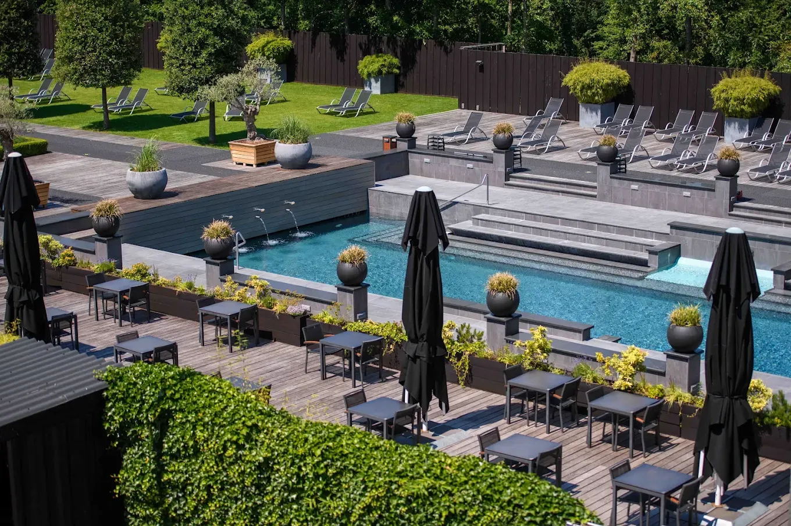

Amsterdam
For field hockey clubs & teams.
Parents and family welcome. Encouraged, actually.
AMSTERDAM
Complete this short form, and we’ll be in touch to answer your questions, walk you through the options, and help you explore how this could become a reality for you and your team.
"My daughter and I had an incredible experience! This trip is the best of both worlds: field hockey & vacation! Very well organized, high level training, and the hotel is spectacular. I highly recommend! It was a vacation we will never forget in a place that now forever holds a piece of our hearts."
"We had the best time! Thank you so much for the amazing experience! As soon as we were pulling away in the Uber to the airport, Lexi said I want to go again next year." Note: they signed up for the next tour.
"It was an amazing experience for Molly and I. She was able to work on her FH development with incredible coaches and play with super-talented players from across the country! It was a great balance of tourism/group activities too. As a parent chaperone, I had a blast too!"
"This was an incredible experience for athletes and their parents... This trip combines an excellent balance between field hockey experience and some leisure time to explore Amsterdam and its surroundings... The trip was very well organized, the accommodations were great, and the company was great too! Thanks Eurotour!"
This is the shape of a team week. Your travel dates change, the structure does not.

Your group lands, gets to the hotel, and gets its first taste of Holland the same afternoon. No training today.
A EuroTour staff member and our bus meet morning arrivals at Amsterdam Airport Schiphol. The group transfer departs for the hotel at 11am. Anyone landing outside that window takes a taxi or Uber, which is a 15 to 20 minute ride to Hotel & Wellness Zuiver.
Rooms, a change of clothes, welcome snacks. At 1:00pm the whole group heads back out for an introduction to the Dutch countryside: windmills, canals, the green wooden houses. It is a deliberately easy first afternoon, built to get people off their flights and onto local time.
Back at the hotel for dinner and an early night. Training starts in the morning.


Athletes ride to the club and meet the Dutch staff. Families get their bikes, a spa orientation, and a bus into the city. Everyone reconvenes for the pancake farmhouse dinner.
ATHLETES
Breakfast, a short walk to collect bikes, then a ride through the Amsterdamse Bos to the club and training pitch. First session with our Dutch coaches. Training days typically run 9:30am to a 4:30pm return, sometimes longer. Lunch is provided on all four training days.
GROUP SIZE
Sessions are built around 9 field players and 2 goalies. That ratio is what makes the coaching specific rather than general, and it holds no matter how large your roster is. Larger groups simply run in more sessions.
FAMILIES
While the athletes train, family members start with a guided walk through the spa, then get fitted for their own bikes for the week, then board the bus for a city orientation: the Nine Streets shops, the Floating Flower Market, and the outer canal ring at Leidseplein. They are back before training ends.
EVENING
Weather permitting, the entire group rides out to a traditional farmhouse for a Dutch pancake dinner. It is one of the two nights people talk about afterward.

A full second day at the club. Day 2 introduced the Dutch method, Day 3 is where your athletes start using it.
Breakfast, bikes, the same 1.5 mile ride to the club. Same schedule, deeper work. The coaches spend this day on the detail your athletes will take home: stick position, hand placement, footwork, body movement.
Families are free all day. Some come to the pitch, some ride into Amsterdam, some stay at the hotel. Dinner is on your own tonight, either at the hotel or in the city.

No training. The whole group takes our private charter bus to Utrecht for the day. A deliberate mid-week break so nobody arrives at the last two sessions flat.
Utrecht is a medieval canal city about half an hour from Amsterdam, and it is built for walking. Tree lined canals, waterside cafes, a large pedestrian center full of shops. The bus takes the group in and brings it back.
The day is unstructured once we arrive. Athletes and families explore together, which is most of the point of it.
Dinner is on your own.

Back to the club, rested. Sessions get more competitive from here as the coaches put the week's work into game situations.
Standard training day: breakfast, ride to the club, full day on the pitch, back to the hotel by late afternoon. Lunch provided.
Families have the day and the evening free. The hotel spa, the city, or the pitch.

The fourth and last full training day, then the whole group gathers at the hotel for the farewell dinner.
Last day on the pitch. By now your athletes have had four full days with FIH educators at a Dutch club, in groups of 9 field players and 2 goalies. Most coaches tell us the change is visible by this session.
Families have a final free day in Amsterdam.
In the evening the entire group, athletes, parents, staff and coaches, sits down together for the farewell dinner at the hotel. Bring whatever you want to say to your team, this is the night for it.

U.S. staff say their goodbyes. Athletes who want one more day of Dutch training can book an optional extra session.
OPTIONAL TRAINING DAY
This is an add on at additional cost and is not included in the tour price. Athletes can book it at registration or later. Our Dutch partner sets a minimum number of participants for the session to run, and we confirm with you once we know.
DEPARTURES
Families arrange their own transfers to Schiphol on departure day. Anyone extending their stay in Europe simply departs from the hotel when they are ready.
ONE THING WE WILL SAY
In 38 years we have never run a week without a few surprises in it. We keep some of those to ourselves.


I have been running these trips since 1989. Over 5,000 athletes. In that time I have watched a lot of coaches try to find their team something that is not just another showcase weekend.
Here is what a team week actually gives you that a domestic camp cannot. Your athletes train for four full days at a Dutch club, with FIH educators, in groups of 9 field players and 2 goalies. Not a clinic. Not a demonstration. Four days of coaching detail from the program behind the 2024 Olympic gold medalists.
Your roster comes home having done that together. That matters more than the hockey. A group that has trained, traveled, eaten and gotten lost in a foreign city together in July is a different group in preseason.
And you are on the pitch for all of it. Most visiting coaches spend the week with a notebook, and take back more than their athletes do.
Every club is different, so we build the week around yours: your dates, your roster, your families. Tell me what you are thinking and I will tell you straight whether it fits.
Bob Whitcher, Founder, Sport EuroTour
We do not bring Dutch coaches to America. We take your team to their home club in Amsterdam and train on their pitches, on their schedule, under their staff. That is the whole idea.

Technical trainer to the Dutch Women's National Team that won Olympic gold in 2024, and founder of SportWays. Thomas sets the curriculum, the standards and the coaching philosophy your athletes will train under.
His method is granular in a way American athletes are rarely coached: stick position, hand placement, footwork, how the body moves before the ball does. It is why athletes come home changed rather than just tired.
Whether Thomas is on the field during your week depends on his national commitments. His program runs it either way.

If you are bringing goalies, this is the reason to come. Martijn has coached Jaap Stockmann and Maddie Hinch. Four Olympic Games, ten EuroHockey Nations Championships, six World Cups, eleven Champions Trophies and an FIH Pro League.
Two goalies per session. Your keepers will not be an afterthought for a single day of the week.
Two ways to land on dates, and both work. Either you bring us the week you want and we check the hotel and the Dutch coaching staff against it, or we send you the weeks that are open that summer and you pick. Clubs with a fixed preseason usually do the first. Clubs with flexibility usually do the second.
Once the hotel and the Dutch club are confirmed for your dates, that week is yours. Nothing goes to your families before this is locked.
You get a page in your club's name with your dates, your pricing and your registration links on it. That is what you send your families. They register directly with us, pay us directly, and we handle every question they have from that point forward. You are not collecting money and you are not running a help desk.
Your job is your roster. Ours is everything on the ground: the hotel, the pitches, the Dutch coaching staff, meals, bikes, the airport transfer, the charter bus, the sightseeing days, rooming, and the families themselves once they have registered.
You are on the pitch for every session, working alongside the Dutch staff. For most coaches that is the real return on the week.
Beyond that, terms for the head coach and organizer, including a complimentary or reduced spot, are worked out when we build your group. They depend on how many people travel, the price point we settle on, and how the week is structured. Ask me and I will be straight with you about what is possible for a group your size.
There is no minimum and no cap. Sessions are built around 9 field players and 2 goalies, so a larger roster simply runs in more groups. Bring what you have.
Athletes do not travel alone. Coverage for your group is something we work out with you directly before anything goes to your families, because it depends on your roster and who is coming with them.

Your whole group stays at Hotel & Wellness Zuiver, a 4-star wellness hotel in the Amsterdamse Bos on the edge of Amsterdam. The reason we use it for teams is location: it is a 1.5 mile flat bike path from the training club, so your athletes get themselves to the pitch and back without a bus.
It is also over 140,000 square feet of spa, pools, saunas, fitness and courts, which is what keeps the parents happy while their daughters are training. Access to the fitness center and weight room is included for adults. Pools, saunas, treatments and classes are available at the hotel for an additional fee and are not part of the tour price.
It is a boutique property, which is the tradeoff. Capacity is real and rooming needs planning, which is covered below.

Training is delivered by SportWays, the program Thomas Tichelman founded, at their own club in Amsterdam. All FIH educators.
Your sessions are on their pitches with their staff, not a touring squad brought to you. Full profiles are in the Highlights section above.

For teams, rooming is planned with you, not left to chance. We work the configuration out with your club coordinator before your registration page goes live, so your families see the right options from the start.
All pricing is based on two to a room. The hotel does not offer triples.
Athlete with a parent: a room with two beds. This is the most common booking on a team trip and it gets priority on the two-bedded rooms.
Athlete without a parent in the room: paired with another athlete in the same situation. On a team booking this is usually straightforward, because your roster already knows each other.
Two adults traveling together: a Superior room with one large bed, 180cm wide, which is about 11 inches wider than a queen.
Anyone on their own: a single room supplement applies. Singles are genuinely limited at this hotel, so tell us early if you expect any.
Athletes and adults register on separate links from your club page. If a bed configuration does not work for a family once they see it, they can take a full refund inside the registration grace period.
We do not expect changes, but minor modifications do happen, so the itinerary is subject to change.
Bikes are how your team gets to training. Every athlete and every adult has one for the week. The route is 1.5 flat miles from the hotel to the pitch on a car-free path through the park.
Tell your families this before they register: athletes must be able to ride a bike safely and confidently. Cycling is their primary transportation to the field, and our staff cannot provide individual assistance or alternate transportation for an athlete who cannot ride. Adults can opt out and walk or take an Uber. Athletes cannot.
We use the private bus where it makes sense: the Day 1 arrival transfer and sightseeing, the Day 2 city orientation for the adults, and the full-group day in Utrecht.
First and foremost, we recommend cancellation insurance. It can provide full refunds for all travel expenses if an issue arises prior to departure. Once we secure your position on tour, we then lock your spot with our hotel and Dutch coach sessions. This requires non-refundable payments we will need to pay in your absence. Therefore, we have established the following cancellation policy to be fair and transparent to all parties involved:
We want to ensure you're confident in your decision. You have a 3-day (72 hour) grace period during which you can rescind your registration for any reason and receive a full refund from Sport EuroTour. Should you cancel after this 3-day period, cancellation fees will then apply.
All cancellations must be received in writing via email to info@sporteurotour.com. The date on which the email is received will be used to determine the applicable cancellation date and charges.
Cancellation Deadlines & Charges – If you cancel:
A $295 non-refundable deposit is required at the time of booking to secure your place. 72 hour grace period applies.
Cancellation by EuroTour: In the rare event that we must cancel a tour due to circumstances beyond our control (Force Majeure, e.g., natural disasters, political instability), we will offer a full refund of all monies paid to us by the members, less your required deposit.
Our cancellation policy and fees apply regardless of the reason for cancellation. Itinerary changes or specific coaching changes on the tour are not eligible for refunds. The cancellation policy and associated fees apply to all participants, whether registered as a parent, athlete, coach, fan, family member, friend, team, or any other designation. Refunds will be processed strictly according to the refund policy, regardless of the reason for cancellation.
Modifications: If you need to change your booking (e.g., changing dates or participants), we will do our best to accommodate your needs. However, changes are subject to availability and may incur additional costs.
This cancellation policy is for each registered person joining the program. Please note that this cancellation policy is part of our terms and conditions. By booking a tour with us, you agree to these terms. We understand that plans can change, and we strive to be as flexible as possible. If you have any questions or need to discuss your situation, please don't hesitate to contact us.
Note: When issues occur, we've seen travel insurance help defray costs and cover travel expenses.
As we cannot offer refunds beyond the terms stated above, we strongly recommend that you purchase comprehensive travel insurance at the time of booking. Your insurance should cover all travel expenses, including cancellation due to illness, injury, or other unforeseen circumstances.
This is a page from a trusted source providing a list of companies that provide this type of protection: TRAVEL PROTECTION CLICK HERE
Please note too, that we do not endorse nor profit from the purchase of any travel insurance.
No minimum and no cap. Sessions are built around 9 field players and 2 goalies, so a bigger roster just runs in more groups. What we do need to know early is your number, because it drives rooming and how many Dutch coaches we book.
Either direction works. Bring us the week you want and we will check the hotel and the Dutch staff against it, or ask us what is open that summer and pick from the list. Clubs with a locked preseason usually do the first.
No. Your families register and pay us directly through a page built in your club's name. We handle their questions, their payment plans, their rooming and their changes from that point on. You recruit the roster, we run the trip.
Team pricing depends on your dates, your group size and how the week is built, so we quote it rather than list it. Send the interest form with your rough numbers and window and we will come back with real figures.
Yes. A deposit holds a spot and the balance comes in installments on a schedule we set with your club. There is also a 72 hour grace period after registration for a full refund.
You are on the pitch alongside the Dutch staff for every session, which most coaches tell us is the real value. Terms for the head coach and organizer, including a complimentary or reduced spot, are worked out when we build your group. They depend on how many people travel and the price point we land on.
Athletes do not travel unaccompanied. How coverage works for your specific group is something we settle with you before anything goes out to your families, because it depends on your roster and who is traveling.
No. Bring your roster as it is. Groups of 9 or fewer mean the Dutch coaches take each athlete from where she actually is. What does matter is stamina, because four full training days in a week is more than most of them have done.
They are a real part of this, not spectators parked in a hotel. Bikes for the week, a spa hotel, a guided city orientation, the Utrecht day, and two group dinners. On training days they have the day to themselves. Plenty of them tell us afterward it was their trip too.
Yes, and clubs do. Families extend, arrive early, or travel elsewhere in Europe afterward. Since everyone books their own flights, that is entirely theirs to arrange and it does not change your program dates with us.
No. Families book their own, which lets them choose the airport, the airline, the schedule and whether to use miles. We can point you at a travel agent who has handled these trips before.
Since 1989. Over 5,000 athletes to Holland across 38 years. Ask us for a club coach who has taken a group and we will connect you.


Tell us about your club or team and your travel window. We will build the week around you and set up registration specific to your group.
Team Interest Form